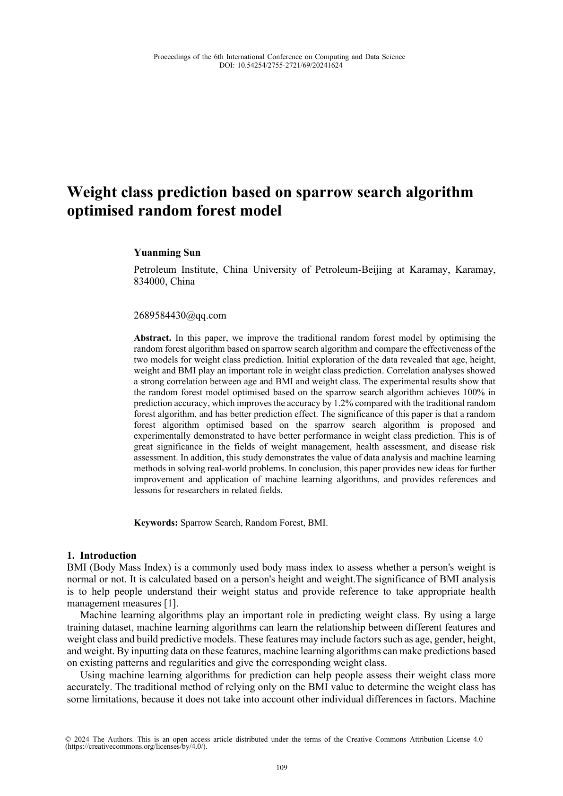

查看 PDF 全文2024 · 作者
Weight class prediction based on sparrow search algorithm optimised random forest model
Yuanming Sun
Applied and Computational Engineering, Vol. 69, pp. 109–115, 2024
- 年份
- 2024
- 发表平台
- Applied and Computational Engineering
- 本人贡献
- 作者
- DOI
- 10.54254/2755-2721/69/20241624
基于麻雀搜索算法优化随机森林模型，用于体重类别预测；围绕年龄、身高、体重和 BMI 等特征完成相关性分析，并比较传统随机森林与优化模型的预测效果。